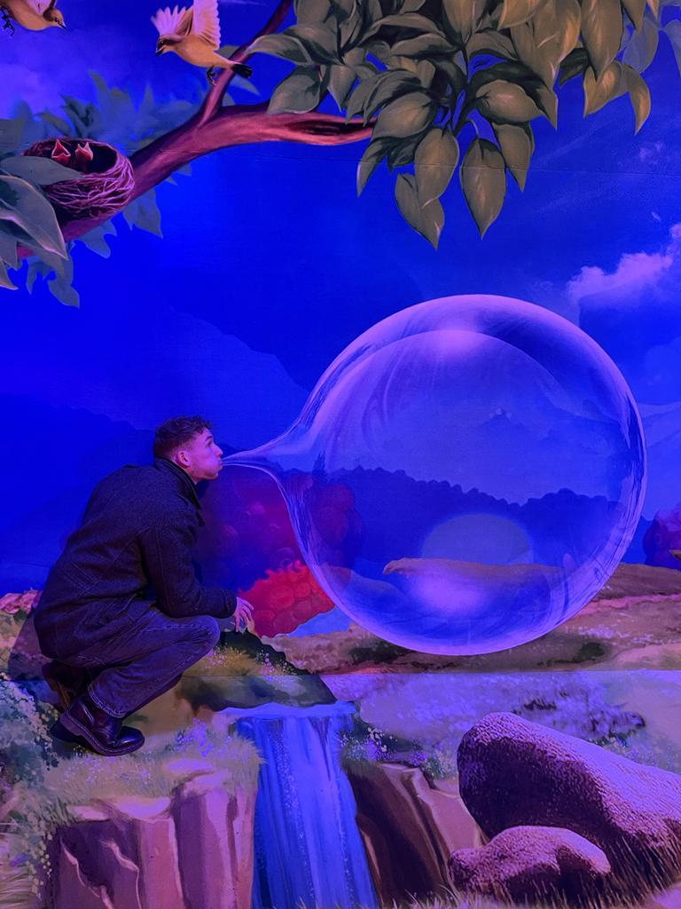

Ik zal mijzelf kort ever voorstellen. Ik ben Max Snoek, 28 jaar en kom uit Breezand. dat is een klein dorpje in de kop van Noord-Holland. ik heb de opleiding CIOS MBO 4 afgeronden daarna vervolgens een jaartje geprobeerd op de ALO in Amsterdam, niet gelukt helaas. na drie kwart jaar moest ik het voor gezien houden en belande ik bij de Jumbo als boodschappen bezorger. Na 5 jaar in dienst te zijn bij de jumbo met vele momenten dat ik wilde stoppen heb ik toch besloten om mijn ogen ergens anders op de richten. daar kwam het voorbij: de cursus Front and developer. Niet naar school, thuis studie, zelf bepalen wanneer wat gebeurd, dat sprak me wel aan en ik ben die cursus gestart. Gelijk ook een test om aan mijn discipline te werken want die is soms ver te zoeken. Nu ik in het hoofdstuk CSS zit begin er meer plezier uit te halen omdat je dingen je eigen smaak kan geven en je meer resultaat ziet.
